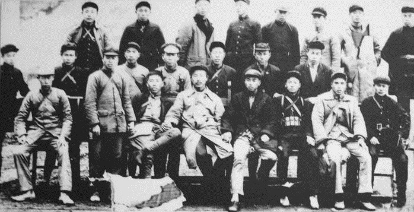
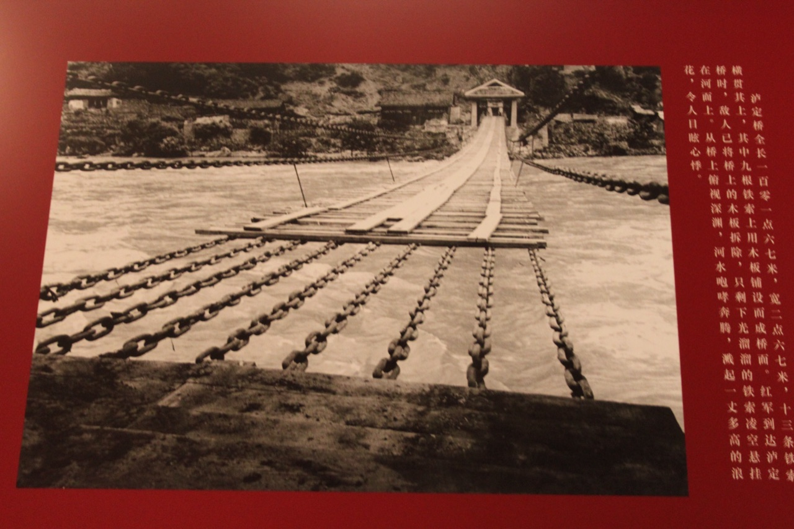
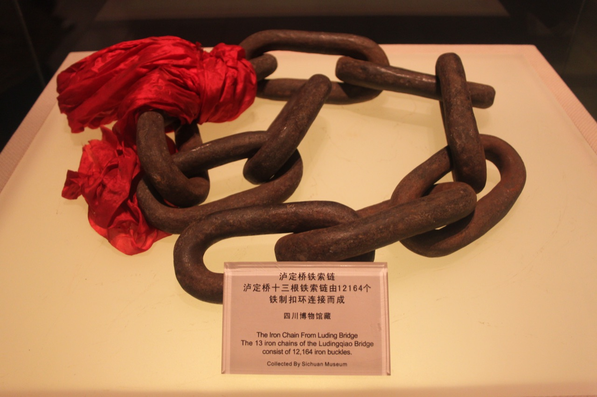

先看局势，再展开路线
1935年，中央红军四渡赤水。沿四次渡河，读懂每一次调整的依据。
约3分钟，读完四次渡河的局势、行动与结果。
纪念红军长征胜利90周年
为什么这样走
《国际歌》· 数字器乐，点击播放
1935年，中央红军四渡赤水。沿四次渡河，读懂每一次调整的依据。
约3分钟，读完四次渡河的局势、行动与结果。
选择后可查看解释，也可重新选择。
以下影像涉及长征不同阶段；两幅展陈照片拍摄于2010年。




摄影者未详，1930年代；具体年份、地点与人物未详。文件页描述为一名共产党干部向集会者讲话。Long-march.jpg · 文件说明页。
文件页标注 PD-China，并依 PD-US1996（1996年原属国已进入公有领域）说明美国公有领域依据。
摄影者未详，1935年11月29日摄于湖南新化。原始出版来源：《中国人民解放军历史资料丛书·红军长征 图片》，解放军出版社，1993年。Hongerliujuntuan.jpg · 文件说明页。文件页标注 PD-China。
Gary Todd，2010年4月25日12:31摄于四川博物院。这是对馆内桥梁影像的翻拍，原影像年代未详。Luding Bridge · 文件说明页。摄影作采用 CC0 1.0，文件页有 Flickr 许可复核记录。
Gary Todd，2010年4月25日12:30摄于四川博物院，记录馆内铁索实物展陈。Chain from Luding Bridge · 文件说明页。摄影作采用 CC0 1.0，文件页有 Flickr 许可复核记录。